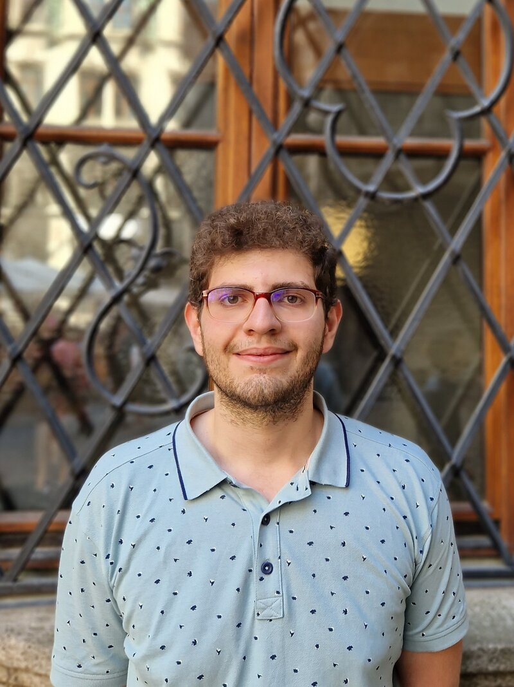

Ph.D. in Computer Science
2021–presentInstitute of Science and Technology Austria (ISTA), Klosterneuburg, Austria.
Ph.D. Student
Institute of Science and Technology Austria (ISTA)

I am a Ph.D. student at the Institute of Science and Technology Austria (ISTA), fortunate to be advised by Krishnendu Chatterjee. Prior to ISTA, I received my B.Sc. in Computer Engineering from Sharif University of Technology.
My research focuses on reliable decision-making under uncertainty. I study how agents should act when the environment is stochastic, partially observable, adversarial, or not known exactly, using models such as stochastic games, Markov decision processes (MDPs), partially observable MDPs (POMDPs), and robust MDPs.
My research program aims to design agents with provable guarantees despite incomplete information, changing environments, and strategic interaction.
Institute of Science and Technology Austria (ISTA), Klosterneuburg, Austria.
Sharif University of Technology, Tehran, Iran. GPA: 18.93/20.
Authors are listed in alphabetical order.
Ali Asadi, Thomas A. Henzinger, Ehsan Kafshdar Goharshady, Pavol Kebis, Kaushik Mallik
To appear in CONCUR ’26.
Ali Asadi, Krishnendu Chatterjee, Pavol Kebis
To appear in CONCUR ’26.
Ali Asadi, Krishnendu Chatterjee, Ehsan Goharshady, Mehrdad Karrabi, Alipasha Montaseri, Carlo Pagano
COLT ’26, PMLR 336:427–457, 2026.
Ali Asadi, Krishnendu Chatterjee, Ehsan Goharshady, Mehrdad Karrabi, Ali Shafiee
AAAI ’26.
Ali Asadi, Krishnendu Chatterjee, David Lurie, Raimundo Saona
AAAI ’26.
Ali Asadi, Léonard Brice, Krishnendu Chatterjee, K. S. Thejaswini
FSTTCS ’25.
Ali Asadi, Krishnendu Chatterjee, Raimundo Saona, Ali Shafiee
UAI ’25.
Ali Asadi, Krishnendu Chatterjee, Jakob de Raaij
UAI ’25.
Ali Asadi, Krishnendu Chatterjee, Raimundo Saona, Jakub Svoboda
FSTTCS ’24.
Ali Asadi, Krishnendu Chatterjee, Raimundo Saona, Jakub Svoboda
LICS ’24, 2024.
Ali Asadi, Krishnendu Chatterjee, Hongfei Fu, Amir Kafshdar Goharshady, Mohammad Mahdavi
PLDI ’21, 2021.
Ali Asadi, Krishnendu Chatterjee, Amir Kafshdar Goharshady, Kiarash Mohammadi, Andreas Pavlogiannis
ATVA ’20, 2020.
Ali Asadi, Krishnendu Chatterjee, Ruichen Luo
Submitted to SODA ’27.
Ali Asadi, Krishnendu Chatterjee
Submitted to Mathematics of Operations Research.
Ali Asadi, Krishnendu Chatterjee, Alipasha Montaseri, Ali Shafiee
Submitted to NeurIPS ’26.
Held office hours and prepared and graded homework assignments.
Prepared and graded homework assignments.
Prepared students for the Iranian National Olympiad in Informatics.
Research interns and rotation students at ISTA.
Led a team of 10 engineers building scalable advertising infrastructure.
Developed high-scale payment and deployment systems.